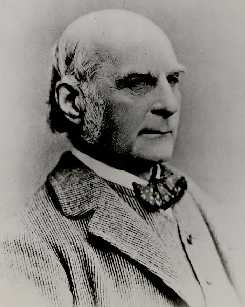

|  |
|
A quotation (Galton 1889) relevant to the central limit theorem and about the normal or "Gaussian" distribution:
I know of scarcely anything so apt to impress the imagination as the wonderful form of cosmic order expressed by the law of frequency of error. The law would have been personified by the Greeks if they had known of it. It reigns with serenity and complete self-effacement amidst the wildest confusion. The larger the mob, the greater the apparent anarchy, the more perfect is its sway. It is the supreme law of unreason."
Sir
Francis Galton Museum homepage
www.galton.org